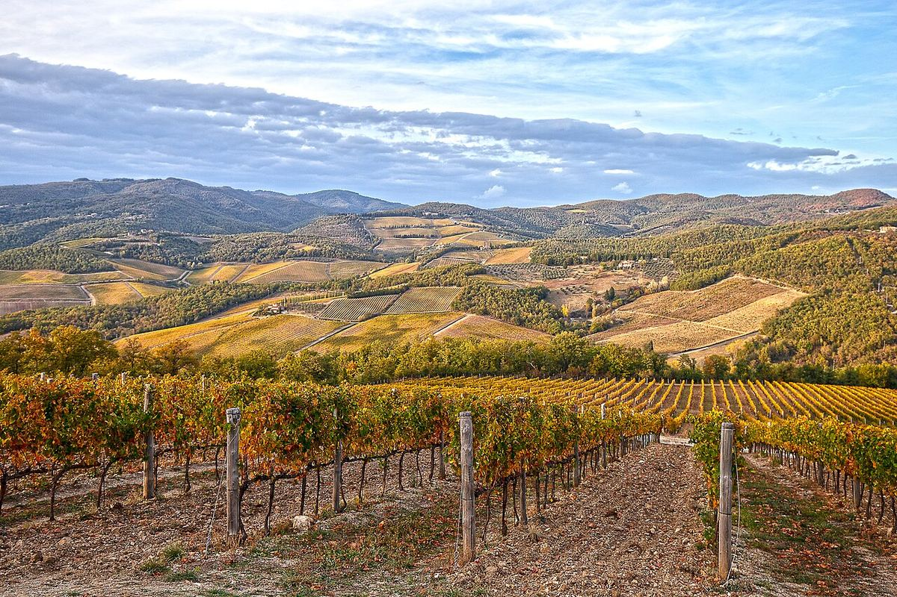

TINTO
El Chianti Classico es la zona histórica del Chianti, entre Florencia y Siena, y su vino se elabora con un mínimo del 80 % de Sangiovese. Su símbolo es el gallo negro y es DOCG independiente desde 1996.

El territorio del Chianti, entre Florencia y Siena, estuvo en la Edad Media organizado en la Liga del Chianti, cuyo emblema era un gallo negro. En 1716 el bando del gran duque Cosimo III de Médici delimitó la zona de producción del vino de Chianti, que corresponde en gran medida a la actual zona clásica. En el siglo XIX Bettino Ricasoli, desde el castillo de Brolio, propuso una fórmula basada en la Sangiovese con aportes de Canaiolo y Malvasía. Con el éxito del vino, la denominación Chianti se extendió a un territorio mucho más amplio, y en 1924 los productores de la zona histórica fundaron un consorcio para protegerla. El Chianti Classico obtuvo la DOCG en 1984, aún como parte del Chianti, y en 1996 se convirtió en una DOCG independiente.
La denominación abarca por completo los municipios de Castellina in Chianti, Gaiole in Chianti, Greve in Chianti y Radda in Chianti, y parte de los de Barberino Tavarnelle, Castelnuovo Berardenga, Poggibonsi y San Casciano in Val di Pesa. Es un paisaje de colinas cubiertas de bosque, olivares y viñedos, con altitudes que en algunos puntos superan los 600 metros. El clima es continental, con inviernos frescos, veranos cálidos y una notable diferencia de temperatura entre el día y la noche, especialmente en las zonas más altas.
Los suelos más característicos son el galestro, una marga arcillosa esquistosa que se desmenuza con facilidad, y el alberese, una caliza compacta. En algunas zonas aparecen areniscas, conocidas como macigno, así como arcillas y arenas.
El Chianti Classico debe contener al menos un 80 % de Sangiovese; el resto puede proceder de otras tintas autorizadas, autóctonas como la Canaiolo y la Colorino o internacionales como la Cabernet Sauvignon y la Merlot. Desde la añada 2006 no se permiten uvas blancas. Existen tres niveles: el Annata, el Riserva, con un mínimo de 24 meses de crianza, y la Gran Selezione, introducida en 2014, que exige uvas de viñedos propios de la bodega y una crianza mínima de 30 meses. En 2021 se aprobaron once Unità Geografiche Aggiuntive (UGA), que permiten indicar en la etiqueta de la Gran Selezione zonas como Panzano, Radda o Gaiole.
Los vinos suelen mostrar color rubí, aromas de cereza, violeta y hierbas, una acidez viva y taninos de grano fino. Las versiones de mayor crianza ganan complejidad, con notas especiadas y terrosas.